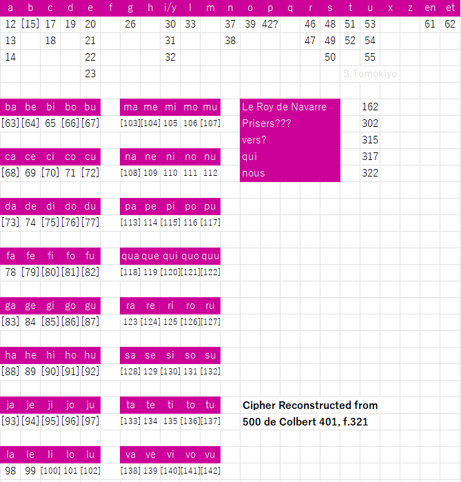

At a glanceKnown key applied · partial (95% of the cipher)
- The letter
- A news-sheet in the third person from Henry of Navarre’s court, La Rochelle, 10 July 1586, signed Henry and countersigned, sent to his envoy Jacques de Ségur-Pardaillan in Germany.
- Where
- Bibliothèque nationale de France, Cinq cents de Colbert 401, f. 333 (Gallica btv1b10035574w, view 369), the first volume of Ségur’s négociation with the German princes. Tomokiyo lists it under Henry III.
- The cipher
- Figures 12–62 for letters in alphabetical order with homophones, 63–142 a table of syllables (sixteen consonant rows by five vowels), numbers from 162 for names.
- How it was deciphered
- With Tomokiyo’s key, rebuilt from the interlinear decipherment of the sister letter f. 321; the decryption fixed four values he had left blank.
- What it says
- As soon as the reiters march, the king will mount; “il fault avancer la levée et la faire marcher le plustost qu’on pourra”.
- Still open
- Five name numbers (204, 189, 190, 166, 167), which with the doubtful words leave 94.8% of the words read (measured 24 October 2026), under 95%; the key letter f. 321 cannot be transcribed figure by figure.
- Credit
- Satoshi Tomokiyo reconstructed the key; the contemporary decipherer of f. 321 is its source.
01 The letter and its key
Two leaves of the volume, ff. 321 and 333, use a key of their own. Tomokiyo rebuilt it from f. 321 (La Rochelle, 11 June 1586), where the decipherer struck through every figure and wrote the clear text between the lines, and posted the table on cryptiana as a cipher of Henry III. The letter of f. 321 is addressed to Clervant, Buhy and Ségur as conseillers en mon conseil d’estat et surintendans de ma maison et finances: the king is Navarre. The same volume holds three letters of 1585–86 in another key of the same design, recovered from the ciphertext alone (Navarre’s key A), and a 1583 letter in a third (f. 143). Each is a different cipher, with its own page; this entry was split from the key A page on 14 October 2026.

The design is that of key A with the letters shifted by eight (a 12–14, b 15–16, c 17–18 … u 53–55, x y z 56–59, et 60–62) and rows for h and j added to the syllable table. In key A the figures below 12 are letters; here they are doubles and nulls, which is what separates the two keys at a glance.
02 f. 333, La Rochelle, 10 July 1586
The clear text reports the duke of Mayenne’s army before Castillon, a plot to surprise Montauban, and Drake’s ravage of Santo Domingo and Cartagena. The cipher, in bold, with the name numbers in braces:
{162} desire fort d’avoir des nouvelles de {204} de {189} {190} … et leur advis sur le chemin [qu’i]l doit tenir et comment. Il attend en bonne devotion ce qui luy sera mandé pour l’effectuer. {167} assurer qu’aussi tost que les reistres marcheront il montera a cheval; {166} et son frere sont de bonne volonte; il fault avancer la levee et la faire marcher le plustost qu’on pourra. Le Roy de Navarre a envoyé comme vous savez le Sr de Vesin de la Marsilliere a Berne avec les ambassadeurs des quatre Cantons de Suisse …
162 is le Roy de Navarre in Tomokiyo’s table, the king’s own sign in his own cipher. The other five numbers are names that occur once each and are not in the table. Five figures disagree with the French and stand as written on a re-reading at twice the zoom (55 in advis, 19 and 31 in à cheval, 88 in fault, 20 in marcher): slips of the encipherer, or homophones the pattern does not predict.
03 Method and checks
- f. 333 was transcribed at twice the working zoom from the full-resolution Gallica image: 108 numeric figures, 62 distinct, of which 103 take a value from the extended table.
- A free annealer on f. 333 alone (the method that recovered key A from 461 figures) does not converge: the best of twelve seeds has 35 of 58 letter figures right, and a matched control of the same size fails the same way. An annealer that builds in the chancery’s design (homophones in alphabetical order) re-derives the letter key blind, every seed agreeing, with 54 of 58 letter figures (93 %) as in Tomokiyo’s table, and 90 % on a matched control; the syllable rows are the weak part at this size. The reading itself rests on Tomokiyo’s key.
- f. 321 cannot be transcribed independently: the decipherer’s stroke runs through the middle of every figure, and removing it removes the digits. One clean segment,
61 130 33 78 54 52= et si l fa u t, matches the interlinear et s’il fault.
04 What remains uncertain
- The name numbers 204, 189, 190, 166 and 167, each once and outside Tomokiyo’s table.
- A figure-by-figure check of Tomokiyo’s table against f. 321, which needs the leaf itself or a raking-light image.
Full texts
The transcription and the decryption of every document on this page, so that the reading can be used and checked. Short files are shown here; all are in the repository.
La Rochelle, 10 July 1586 (BnF 500 de Colbert 401 f. 333) read in part
A news-sheet in the third person signed Henry at La Rochelle, 10 July 1586, sent to Ségur: the King of Navarre wants news and advice on the road he should take, and will mount as soon as the reiters march; the levy must be hastened and set marching as soon as possible. The clear parts report Mayenne's army, the plot at Montauban, Drake's raids, and Vesin de la Marsillière's mission to Berne.
Builds coherent sentences, but under the read bar of 95% of words read as sense (95% here); the holes are marked in the reading.
Transcription
# BnF 500 Colbert 401 f.333 — Henry of Navarre, La Rochelle, 10 July 1586 (Gallica canvas 369). Secretary hand, countersigned. # Transcribed 2026-09-16 from the full-resolution IIIF image at 2x; clear text in [brackets]; INS = superscript insertion. [L'armee du duc de Mayenne doit ... assieger Castillon ... Montauban a failly d'estre surprise par la trahison et conspiration du Sr de Claux ... Drak a faict ravage en Espagnols. Il a ruiné et rasé l'isle de St Dominique. Il est allé a Cartagene et fait terreur a tous les Espagnols.] 162 [desire fort d'avoir des nouvelles de] 204 74 189 190 61 120 31 126 62 99 54 46 12 19 140 55 132 47 99 17 89 105 38 108 34 76 31 52 134 110 47 62 71 36 104 37 51 [Il attend en bonne devotion ce qui luy sera mandé pour l'effectuer] 167 [assurer qu'aussi tost que les] 48 124 32 50 52 46 23 49 103 47 18 89 126 38 52 31 34 106 38 134 123 14 19 89 138 31 166 62 131 37 24 124 46 23 131 38 51 74 66 38 109 141 101 37 134 32 34 88 55 52 13 138 38 69 47 98 99 139 22 61 98 78 31 124 103 47 20 89 46 [le plustost qu'on pourra. Le Roy de Navarre a envoyé comme vous savez le Sr de Vesin de la Marsilliere a Berne avec les ambassadeurs des quatre Cantons de Suisse]
Decryption
# Output of targets/segur/decode.py, run 22 Oct 2026 with key_321.json on ct_333.txt (BLOCK0=63 NBLK=16). Clear text in capitals, cipher decoded in lower case, {n} = no value (name codes; 162 = Le Roy de Navarre in Tomokiyo's table). Verbatim script output, not edited.
L'ARMEE DU DUC DE MAYENNE DOIT ... ASSIEGER CASTILLON ... MONTAUBAN A FAILLY D'ESTRE SURPRISE PAR LA TRAHISON ET CONSPIRATION DU SR DE CLAUX ... DRAK A FAICT RAVAGE EN ESPAGNOLS. IL A RUINÉ ET RASÉ L'ISLE DE ST DOMINIQUE. IL EST ALLÉ A CARTAGENE ET FAIT TERREUR A TOUS LES ESPAGNOLS. {162} DESIRE FORT D'AVOIR DES NOUVELLES DE {204}de{189}{190}etqiiro
etleuradviusurlecheminnaldoittenir
etcomment IL ATTEND EN BONNE DEVOTION CE QUI LUY SERA MANDÉ POUR L'EFFECTUER
{167} ASSURER QU'AUSSI TOST QUE LES sreistresmarcherontilmon
teraadhevai{166}etsonfreresontdebonnevo
lonteilhautavancerlaleveeetlafairema
reher LE PLUSTOST QU'ON POURRA. LE ROY DE NAVARRE A ENVOYÉ COMME VOUS SAVEZ LE SR DE VESIN DE LA MARSILLIERE A BERNE AVEC LES AMBASSADEURS DES QUATRE CANTONS DE SUISSEReading
# Henry of Navarre, La Rochelle, 10 July 1586: news-sheet to Ségur (BnF 500 de Colbert 401 f. 333): reading
Running text of the decoder output `texts/f333_decryption.md` (Tomokiyo's f. 321 key), written out 23 Oct 2026
(translation wave v7) as NOTES.md normalises it ("f. 333"): the clear text, in capitals in the decryption, is set in
ordinary case; the cipher, lower case and unspaced there, is word-divided and set in ⟨ ⟩. Letters as decoded, except
where the decryption's slips are read as NOTES reads them (sreistres = les reistres; adhevai = a cheval; reher =
marcher; the five slip figures). `[162]`, `[166]`, `[167]`, `[189]`, `[190]`, `[204]` are name codes with no value
except 162 = le Roy de Navarre (Tomokiyo's table); `[…]` the run after [190] (etqiiro) that makes no word; `…` the
clear text abridged in the decryption. French.
## Reading
L'armée du duc de Mayenne doit … assieger Castillon … Montauban a failly d'estre surprise par la trahison et
conspiration du Sr de Claux … Drak a faict ravage en Espagnols. Il a ruiné et rasé l'isle de St Dominique. Il est allé
a Cartagene et fait terreur a tous les Espagnols. [162 = le Roy de Navarre] desire fort d'avoir des nouvelles de
[204] de [189] [190] ⟨[…] et leur advis sur le chemin [qu'i]l doit tenir et comment⟩. Il attend en bonne devotion ce
qui luy sera mandé pour l'effectuer. [167] assurer qu'aussi tost que ⟨les reistres marcheront il montera a cheval;
[166] et son frere sont de bonne volonte; il fault avancer la levee et la faire marcher⟩ le plustost qu'on pourra. Le
Roy de Navarre a envoyé, comme vous savez, le Sr de Vesin de la Marsilliere a Berne avec les ambassadeurs des quatre
cantons de Suisse.Translation
# Henry of Navarre, La Rochelle, 10 July 1586: news-sheet to Ségur (BnF 500 de Colbert 401 f. 333): English translation Translation (Claude Opus 5.5, 23 Oct 2026) of `texts/f333_reading.md` (clear text with the cipher in ⟨ ⟩). Same holes: `[166]`, `[167]`, `[189]`, `[190]`, `[204]` name codes with no value, `[…]` a run that makes no word, `…` clear text abridged; `[qu'i]l` supplied letters. French. ## Translation The Duke of Mayenne's army is to … besiege Castillon … Montauban was nearly surprised through the treason and conspiracy of the Sieur de Claux … Drake has wrought havoc among the Spaniards. He has ruined and razed the island of Santo Domingo. He has gone to Cartagena and strikes terror into all the Spaniards. [162 = the King of Navarre] greatly desires to have news of [204], of [189] [190] ⟨[…] and their advice on the road he is to take, and how⟩. He awaits with good devotion what will be sent him in order to carry it out. [167] to assure that, as soon as ⟨the reiters march, he will mount his horse; [166] and his brother are of good will; the levy must be hastened and set marching⟩ as soon as can be. The King of Navarre has sent, as you know, the Sieur de Vesin de la Marsillière to Berne with the ambassadors of the four cantons of Switzerland.
Key: key_321.json
05 Sources
- BnF, Cinq cents de Colbert 401, Négociation de M. de Segur, baron de Pardaillan, pour le roi de Navarre avec les Princes protestans d’Allemagne, 1584–1588, I, ff. 321 and 333, Gallica (views 359 and 369).
- S. Tomokiyo, “Henry III’s Figure Ciphers” in French Ciphers during the Reign of Henry III (cryptiana).
The transcription, the extended key and the controls are in the repository (targets/navarre1586/); the scripts are in targets/segur/. Manuscript rights: Bibliothèque nationale de France.